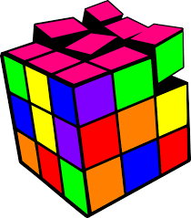

Los algoritmos como tal se pueden definir como una serie de instrucciones para resolver un problema, los algoritmos se usan para resolver problemas principalmente de tipo matemáticos como cálculos, en los cuales se debe seguir una serie de instrucciones las cuales no se deben contradecir y deben ser totalmente realizables, un algoritmo no se basa en la posibilidad de resolver si no en la forma de resolverlo.
Un algoritmo cualitativo es aquel que no implica cálculos matemáticos, implica procesos, por ejemplo el proceso de cambiar un bombillo.
Un algoritmo cuantitativo es aquel que implica cálculos de carácter matemático, estos son los usados en la programación, contiene datos de entrada, un proceso y una salida.
